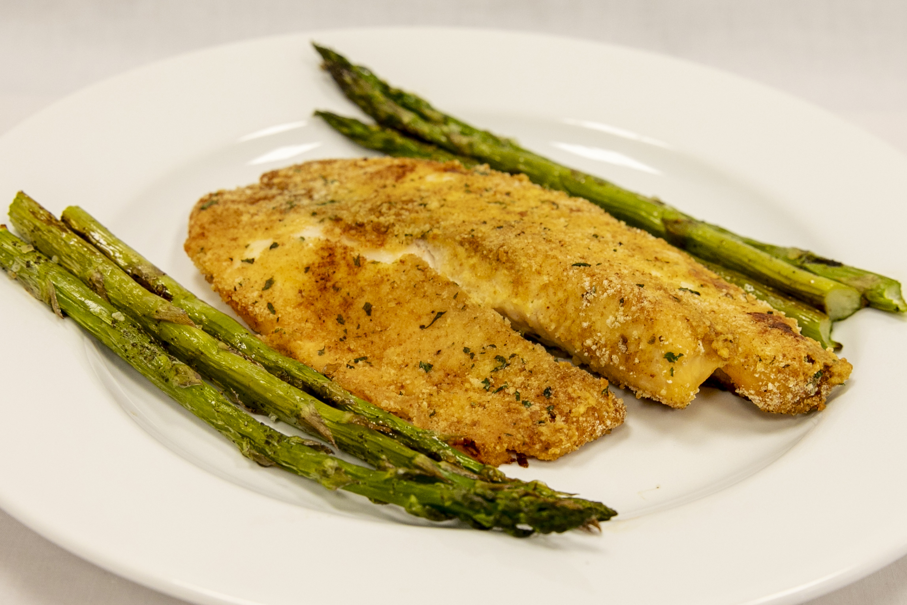

Pan-seared Tilapia

Description
A popular and delicious seafood dish that is quick and easy to make.
Ingredients
- Tilapia fillet(s)
- salt and pepper
- 1/2 cup all-purpose flour
- 1 tbsp olive oil
- 2 tbsp unsalted melted butter
Steps
- Rinse fillet(s) in cold water and season.
- Gently coat fillet(s) in flour.
- Heat olive oil and cook fillets for about 4 minutes.
- Brush butter on fillet(s) just before cooking is finished.